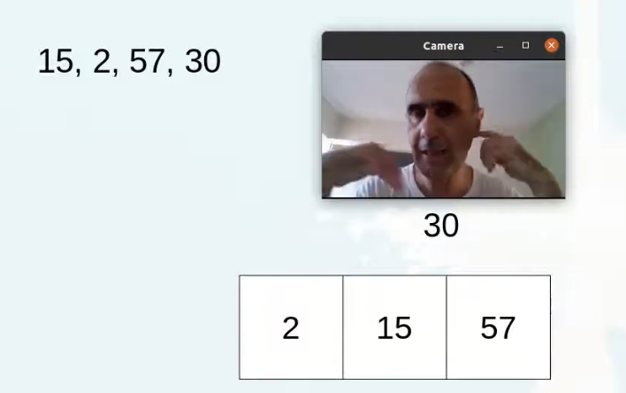
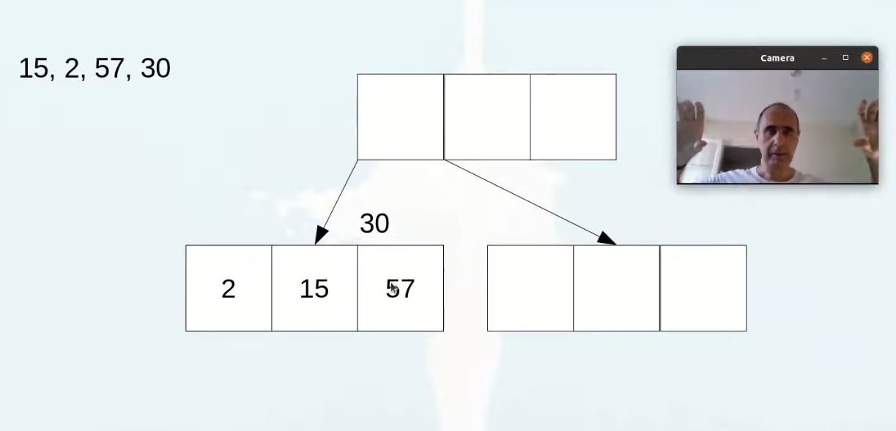
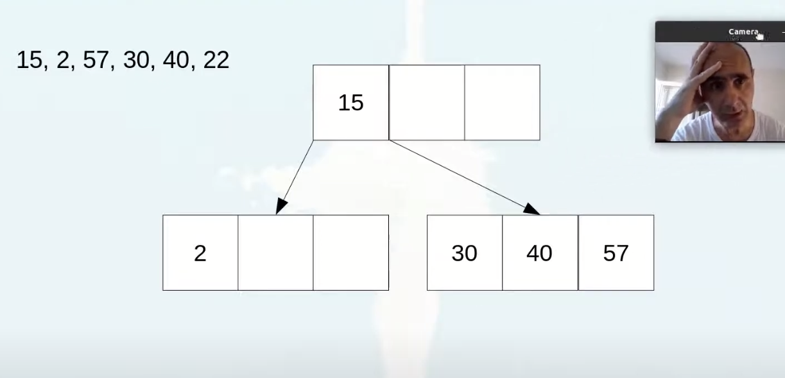
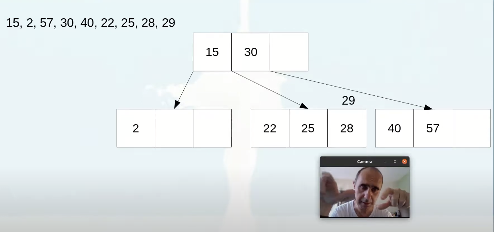
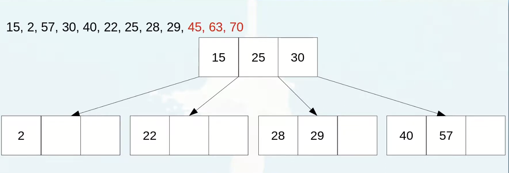
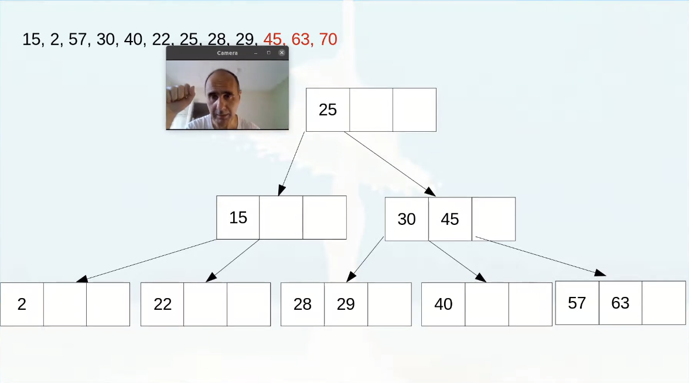
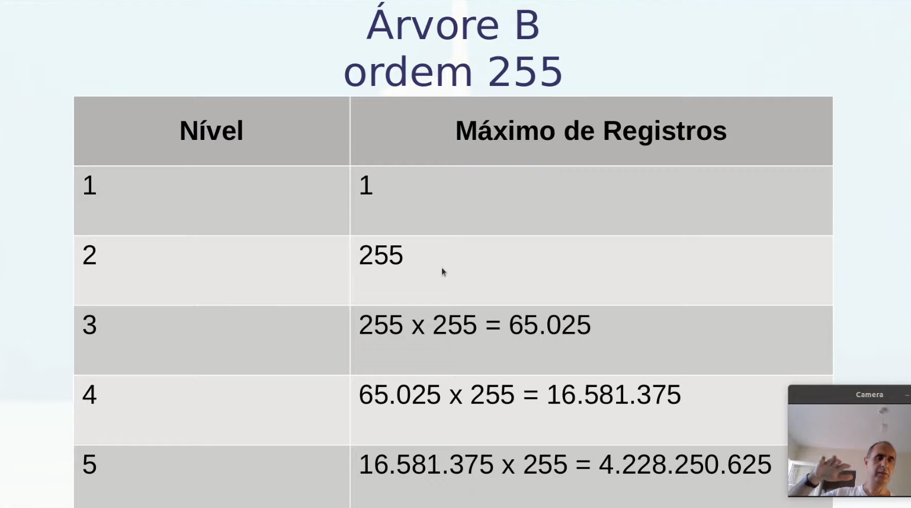
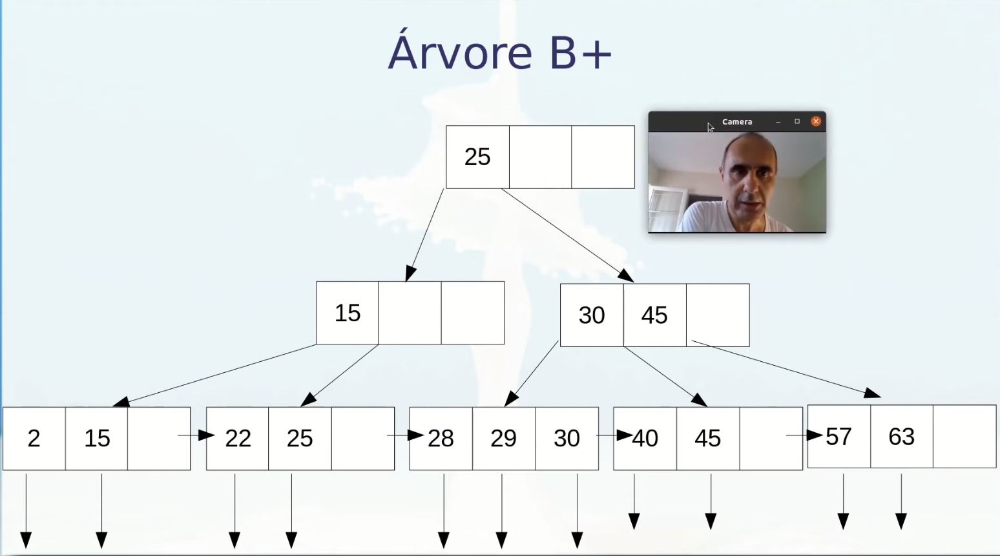
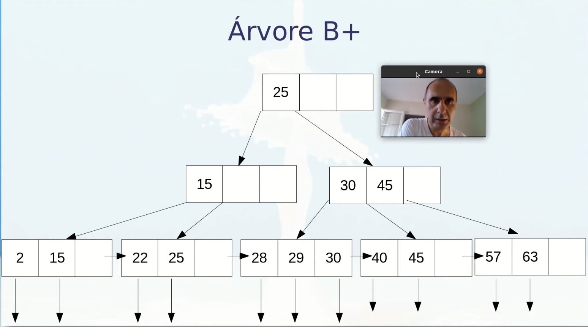

Disciplinas
-
BANCO DE DADOS-T01-2024-1 Concluído
Materiais
Vídeo 4 - Índices: Árvore B e B+ - Aula 22/09 - Bancos de Dados 2021.2. sendProfessor ministrante: André Santanchè.
Conteúdo
Árvore B.
Ordem m.
- nós não folha.
- k filhos e k-1 chaves.
- mínimo m/2 filhos (exceto raiz).
- máximo m filhos.
- nós folha.
- todos no mesmo nível.
Montando uma Árvore B.
Estouro:  Split:     Questão.Como ficará a árvore com a introdução destes três números (45, 63, 70)?
 Árvore não Binária: Árvore B+.
- Nós intermediários guiam.
- chaves se repetem nas folhas.
- Folhas com ponteiros para registros.
- Folhas indicam próximo nó.
 

Referências:
- Abadi D, Boncz P, Harizopoulos S, Idreos S, Madden S. (2013) The Design and Implementation of Modern Column- Oriented Database Systems. Foundations and Trends in Databases. 5(3):197-280.Chen, Peter Pin-Shan (1976) The entity-relationship model – toward a unified view of data. - ACM Trans. Database Systems, ACM, 1, 9-36.
- Almeida, Charles Ornelas, Guerra, Israel; Ziviani, Nivio (2010) Projeto de Algoritmos (transparências aula).
- Demaine, Erik. 6.897: Advanced Data Structures - Lecture 2 (notas de aula). Fevereiro, 2003.
- Elmasri, Ramez; Navathe, Shamkant B. (2005) Sistemas de Bancos de Dados. Addison-Wesley, 4ª edição em português.
- Elmasri, Ramez; Navathe, Shamkant B. (2011) Sistemas de Bancos de Dados. Addison-Wesley, 6ª edição em português.
- Koudas, N. (2000). Space efficient bitmap indexing. Proceedings of the ninth international conference on Information and knowledge management (CIKM '00). New York, NY, USA: ACM. pp. 194-201. doi:10.1145/354756.354819